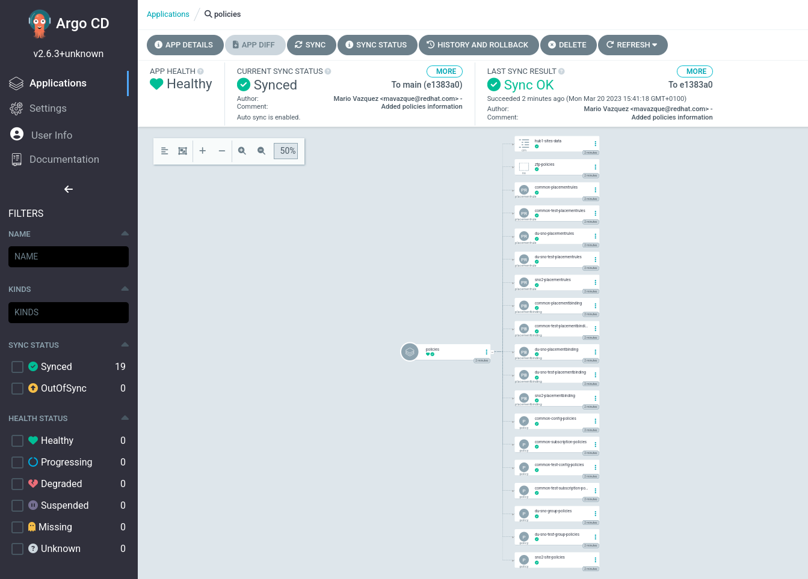
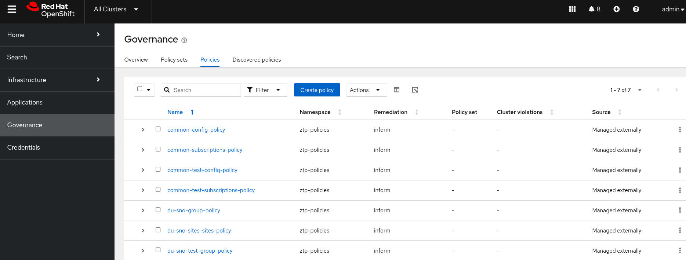

Crafting the Telco RAN Reference Design Specification
In the previous section, the ZTP GitOps pipeline was put in place to deploy our Infrastructure as Code (IaC) and Configuration as Code (CaC). Here, we are going to focus on creating the Configuration as Code (CaC) for the OpenShift clusters that will be installed in the following sections. The configuration of the Telco RAN Reference Design Specification is applied using multiple PolicyGenerator objects.
The PolicyGenerator object is the cornerstone for defining Configuration as Code (CaC) within this ZTP pipeline, enabling scalable and consistent configuration of OpenShift clusters. We described how PolicyGenerator works in detail here, so let’s jump directly to the creation of the different policies.
| The configuration defined through these PolicyGenerator CRs is only a subset of what was described in Introduction to Telco Related Infrastructure Operators. This is for clarity and tailored to the lab environment. A full production environment for supporting telco 5G vRAN workloads would have additional configuration not included here, but described in detail as the v4.20 Telco RAN Reference Design Specification in the official documentation. |
| Below commands must be executed from the infrastructure host if not specified otherwise. |
Crafting Common Policies
The common policies apply to every cluster in our infrastructure that matches our binding rule. They are designed for universal configurations that apply to a broad set of clusters sharing an OpenShift release. This reinforces the efficiency gains of managing a large fleet. They are often used to configure things like CatalogSources, operator deployments, etc. that are common to all our clusters.
These configs may vary from release to release, that’s why we create a common-420.yaml file. We will likely have a common configuration profile for each release we deploy.
| The PolicyGenerator object utilizes binding rules defined by labels (e.g., common: "ocp419" and logicalGroup: "active") that are pre-set within the ClusterInstance definition, ensuring that these common configurations are automatically applied to the designated clusters across your fleet. |
-
Create the
commonPolicyGenerator for v4.20 SNOs:cat <<EOF > ~/5g-deployment-lab/ztp-repository/site-policies/fleet/active/v4.20/common-420.yaml --- apiVersion: policy.open-cluster-management.io/v1 kind: PolicyGenerator metadata: name: common placementBindingDefaults: name: common-placement-binding policyDefaults: namespace: ztp-policies placement: labelSelector: common: "ocp420" logicalGroup: "active" remediationAction: inform severity: low namespaceSelector: exclude: - kube-* include: - '*' evaluationInterval: compliant: 10m noncompliant: 10s policies: - name: common-config-policy policyAnnotations: ran.openshift.io/ztp-deploy-wave: "1" manifests: - path: source-crs/reference-crs/ReduceMonitoringFootprint.yaml - path: source-crs/reference-crs/DefaultCatsrc.yaml patches: - metadata: name: redhat-operator-index spec: image: infra.5g-deployment.lab:8443/redhat/redhat-operator-index:v4.20-1769431701 - name: common-subscriptions-policy policyAnnotations: ran.openshift.io/ztp-deploy-wave: "2" manifests: # Ptp operator - path: source-crs/reference-crs/PtpSubscriptionNS.yaml - path: source-crs/reference-crs/PtpSubscription.yaml patches: - spec: channel: stable source: redhat-operator-index installPlanApproval: Automatic - path: source-crs/reference-crs/PtpSubscriptionOperGroup.yaml - path: source-crs/reference-crs/PtpOperatorStatus.yaml - path: source-crs/reference-crs/PtpOperatorConfig-SetSelector.yaml patches: - spec: daemonNodeSelector: node-role.kubernetes.io/master: "" # SRIOV operator - path: source-crs/reference-crs/SriovSubscriptionNS.yaml - path: source-crs/reference-crs/SriovSubscription.yaml patches: - spec: channel: stable source: redhat-operator-index config: env: - name: "DEV_MODE" value: "TRUE" installPlanApproval: Automatic - path: source-crs/reference-crs/SriovSubscriptionOperGroup.yaml - path: source-crs/reference-crs/SriovOperatorStatus.yaml # Storage operator - path: source-crs/reference-crs/StorageLVMSubscriptionNS.yaml patches: - metadata: annotations: workload.openshift.io/allowed: "management" - path: source-crs/reference-crs/StorageLVMSubscriptionOperGroup.yaml - path: source-crs/reference-crs/StorageLVMSubscription.yaml patches: - spec: channel: stable-4.20 source: redhat-operator-index installPlanApproval: Automatic - path: source-crs/reference-crs/LVMOperatorStatus.yaml # Cluster Logging - path: source-crs/reference-crs/ClusterLogNS.yaml - path: source-crs/reference-crs/ClusterLogSubscription.yaml patches: - spec: channel: stable-6.4 source: redhat-operator-index installPlanApproval: Automatic - path: source-crs/reference-crs/ClusterLogOperGroup.yaml - path: source-crs/reference-crs/ClusterLogOperatorStatus.yaml EOF
Notice that the operators included in the PolicyGenerator object are foundational for Telco RAN DU workloads, providing essential capabilities like precise timing, high-performance networking, storage, and centralized logging.
Crafting Group Policies
The group policies are tailored for logical groupings of clusters that share specific characteristics or hardware requirements, necessitating specialized tuning. This approach allows for applying performance-critical configurations efficiently across similar clusters. Those policies apply to a group of clusters that typically have something in common, for example they are SNOs, or they have similar hardware: SR-IOV cards, number of CPUs, number of disks, etc.
The CNF team has prepared some common tuning configurations that should be applied on every SNO DU deployed with similar hardware. In this section, we will be crafting these configurations.
If you check the binding rules you can see that we are targeting clusters labeled with group-du-sno: "", logicalGroup: "active" and hardware-type: "hw-type-platform-1". These labels are set in the ClusterInstance definition.
|
-
Create the
groupPolicyGenerator for SNOs:The policy below configures PTP with software time stamping. This is not supported in production environments, we had to configure it like that to be able to run PTP in the virtual environment. cat <<EOF > ~/5g-deployment-lab/ztp-repository/site-policies/fleet/active/v4.20/group-du-sno.yaml --- apiVersion: policy.open-cluster-management.io/v1 kind: PolicyGenerator metadata: name: du-sno placementBindingDefaults: name: group-du-sno-placement-binding policyDefaults: namespace: ztp-policies placement: labelSelector: group-du-sno: "" logicalGroup: "active" hardware-type: "hw-type-platform-1" remediationAction: inform severity: low # standards: [] namespaceSelector: exclude: - kube-* include: - '*' evaluationInterval: compliant: 10m noncompliant: 10s policies: - name: du-sno-group-policy policyAnnotations: ran.openshift.io/ztp-deploy-wave: "10" manifests: - path: source-crs/reference-crs/ClusterLogServiceAccount.yaml - path: source-crs/reference-crs/ClusterLogServiceAccountAuditBinding.yaml - path: source-crs/reference-crs/ClusterLogServiceAccountInfrastructureBinding.yaml - path: source-crs/reference-crs/ClusterLogForwarder.yaml patches: - spec: filters: - name: ran-du-labels type: openshiftLabels openshiftLabels: cluster-type: "du-sno" serviceAccount: name: collector outputs: - name: loki-hub type: "loki" loki: url: https://logging-loki-openshift-logging.apps.hub.5g-deployment.lab/api/logs/v1/tenant-snos labelKeys: - log_type - kubernetes.namespace_name - kubernetes.pod_name - openshift.cluster_id tls: insecureSkipVerify: true ca: key: ca-bundle.crt secretName: mtls-tenant-snos certificate: key: tls.crt secretName: mtls-tenant-snos key: key: tls.key secretName: mtls-tenant-snos pipelines: - name: sno-logs inputRefs: - infrastructure - audit outputRefs: - loki-hub filterRefs: - ran-du-labels - path: source-crs/custom-crs/logging-mtls-secret.yaml - path: source-crs/reference-crs/PtpConfigSlave.yaml patches: - spec: profile: - interface: enp4s0 name: slave ptp4lOpts: "-2 -s -A --clientOnly=1 --step_threshold=0.1" # ptp4lOpts -A --clientOnly=1 --step_threshold=0.1 are required for this # lab environment running on virtual hardware # phc2sysOpts should have -a, and instead we have to specify clock device manually (-s) phc2sysOpts: -r -n 24 -s /dev/ptp0 ptp4lConf: | [global] # # Default Data Set # twoStepFlag 1 slaveOnly 1 priority1 128 priority2 128 domainNumber 24 #utc_offset 37 clockClass 255 clockAccuracy 0xFE offsetScaledLogVariance 0xFFFF free_running 0 freq_est_interval 1 dscp_event 0 dscp_general 0 dataset_comparison G.8275.x G.8275.defaultDS.localPriority 128 # # Port Data Set # logAnnounceInterval -3 logSyncInterval -4 logMinDelayReqInterval -4 logMinPdelayReqInterval -4 announceReceiptTimeout 3 syncReceiptTimeout 0 delayAsymmetry 0 fault_reset_interval -4 neighborPropDelayThresh 20000000 masterOnly 0 G.8275.portDS.localPriority 128 # # Run time options # assume_two_step 0 logging_level 6 path_trace_enabled 0 follow_up_info 0 hybrid_e2e 0 inhibit_multicast_service 0 net_sync_monitor 0 tc_spanning_tree 0 tx_timestamp_timeout 50 unicast_listen 0 unicast_master_table 0 unicast_req_duration 3600 use_syslog 1 verbose 0 summary_interval 0 kernel_leap 1 check_fup_sync 0 #clock_class_threshold 7 -> we use threshold 248 since GM doesn't have a GPS source clock_class_threshold 248 # # Servo Options # pi_proportional_const 0.0 pi_integral_const 0.0 pi_proportional_scale 0.0 pi_proportional_exponent -0.3 pi_proportional_norm_max 0.7 pi_integral_scale 0.0 pi_integral_exponent 0.4 pi_integral_norm_max 0.3 step_threshold 2.0 first_step_threshold 0.00002 max_frequency 900000000 clock_servo pi sanity_freq_limit 200000000 ntpshm_segment 0 # # Transport options # transportSpecific 0x0 ptp_dst_mac 01:1B:19:00:00:00 p2p_dst_mac 01:80:C2:00:00:0E udp_ttl 1 udp6_scope 0x0E uds_address /var/run/ptp4l # # Default interface options # clock_type OC network_transport L2 delay_mechanism E2E time_stamping software tsproc_mode filter delay_filter moving_median delay_filter_length 10 egressLatency 0 ingressLatency 0 boundary_clock_jbod 0 # # Clock description # productDescription ;; revisionData ;; manufacturerIdentity 00:00:00 userDescription ; timeSource 0xA0 ptpSchedulingPolicy: SCHED_FIFO ptpSchedulingPriority: 10 ptpSettings: logReduce: "true" recommend: - match: - nodeLabel: node-role.kubernetes.io/master priority: 4 profile: slave - path: source-crs/reference-crs/DisableOLMPprof.yaml - path: source-crs/reference-crs/DisableSnoNetworkDiag.yaml - path: source-crs/reference-crs/ConsoleOperatorDisable.yaml - path: source-crs/reference-crs/SriovOperatorConfig-SetSelector.yaml patches: - spec: disableDrain: true enableOperatorWebhook: '{{hub fromConfigMap "" "group-hardware-types-configmap" (printf "%s-supported-sriov-nic" (index .ManagedClusterLabels "hardware-type")) | toBool hub}}' - path: source-crs/reference-crs/StorageLVMCluster.yaml patches: - spec: storage: deviceClasses: - name: vg1 thinPoolConfig: name: thin-pool-1 sizePercent: 90 overprovisionRatio: 10 deviceSelector: paths: - '{{hub fromConfigMap "" "group-hardware-types-configmap" (printf "%s-storage-path" (index .ManagedClusterLabels "hardware-type")) hub}}' - path: source-crs/reference-crs/PerformanceProfile-SetSelector.yaml patches: - spec: cpu: isolated: '{{hub fromConfigMap "" "group-hardware-types-configmap" (printf "%s-cpu-isolated" (index .ManagedClusterLabels "hardware-type")) hub}}' reserved: '{{hub fromConfigMap "" "group-hardware-types-configmap" (printf "%s-cpu-reserved" (index .ManagedClusterLabels "hardware-type")) hub}}' hugepages: defaultHugepagesSize: '{{hub fromConfigMap "" "group-hardware-types-configmap" (printf "%s-hugepages-default" (index .ManagedClusterLabels "hardware-type"))| hub}}' pages: - count: '{{hub fromConfigMap "" "group-hardware-types-configmap" (printf "%s-hugepages-count" (index .ManagedClusterLabels "hardware-type")) | toInt hub}}' size: '{{hub fromConfigMap "" "group-hardware-types-configmap" (printf "%s-hugepages-size" (index .ManagedClusterLabels "hardware-type")) hub}}' numa: topologyPolicy: restricted realTimeKernel: enabled: false # WorkloadHints defines the set of upper level flags for different type of workloads. # The configuration below is set for a low latency, performance mode. workloadHints: realTime: true highPowerConsumption: false perPodPowerManagement: false machineConfigPoolSelector: pools.operator.machineconfiguration.openshift.io/master: "" nodeSelector: node-role.kubernetes.io/master: '' - path: source-crs/reference-crs/TunedPerformancePatch.yaml patches: - spec: profile: - name: performance-patch data: | [main] summary=Configuration changes profile inherited from performance created tuned include=openshift-node-performance-openshift-node-performance-profile [sysctl] # When using the standard (non-realtime) kernel, remove the kernel.timer_migration override from the [sysctl] section # kernel.timer_migration=0 [scheduler] group.ice-ptp=0:f:10:*:ice-ptp.* group.ice-gnss=0:f:10:*:ice-gnss.* group.ice-dplls=0:f:10:*:ice-dplls.* [service] service.stalld=start,enable service.chronyd=stop,disable recommend: - machineConfigLabels: machineconfiguration.openshift.io/role: master priority: 19 profile: performance-patch EOFBy leveraging hub site templating we are reducing the number of policies on our hub cluster. This makes the clusters’s deployment and maintenance process simpler. Notice that with large fleets of clusters, it can quickly become hard to maintain per-site configurations. -
We’re using policy templating, so we need to create a
ConfigMapwith the templating values to be used. Notice that the following resource contains values for multiple hardware specifications that we may have in our infrastructure. In the policy we just applied, the values are obtained depending on the labelhardware-typethat each cluster is assigned to. This label is set in theClusterInstancedefinition. More information about Template processing can be found in Red Hat Advanced Cluster Management documentation.cat <<EOF > ~/5g-deployment-lab/ztp-repository/site-policies/fleet/active/v4.20/group-hardware-types-configmap.yaml --- apiVersion: v1 kind: ConfigMap metadata: name: group-hardware-types-configmap namespace: ztp-policies annotations: argocd.argoproj.io/sync-options: Replace=true data: # PerformanceProfile.yaml hw-type-platform-1-cpu-isolated: "4-11" hw-type-platform-1-cpu-reserved: "0-3" hw-type-platform-1-hugepages-default: "1G" hw-type-platform-1-hugepages-count: "4" hw-type-platform-1-hugepages-size: "1G" hw-type-platform-1-supported-sriov-nic: "false" # StorageLVMCluster.yaml hw-type-platform-1-storage-path: "/dev/vdb" hw-type-platform-2-cpu-isolated: "2-39,42-79" hw-type-platform-2-cpu-reserved: "0-1,40-41" hw-type-platform-2-hugepages-default: "256M" hw-type-platform-2-hugepages-count: "16" hw-type-platform-2-hugepages-size: "1G" hw-type-platform-2-supported-sriov-nic: "true" hw-type-platform-2-storage-path: "/dev/nvme0n1" EOF -
Next, let’s include the DU validator policy crafted by the CNF team. This validator policy is designed to verify the successful application and compliance of the specific Telco RAN RDS group policies, acting as a crucial assurance mechanism within the ZTP workflow.
cat <<EOF > ~/5g-deployment-lab/ztp-repository/site-policies/fleet/active/v4.20/group-du-sno-validator.yaml --- apiVersion: policy.open-cluster-management.io/v1 kind: PolicyGenerator metadata: name: du-sno-validator placementBindingDefaults: name: group-du-sno-placement-binding policyDefaults: namespace: ztp-policies placement: labelSelector: matchExpressions: - key: group-du-sno operator: Exists - key: logicalGroup operator: In values: ["active"] - key: ztp-done operator: DoesNotExist remediationAction: inform severity: low namespaceSelector: exclude: - kube-* include: - '*' evaluationInterval: # This low setting is only valid if the validation policy is disconnected from the cluster at steady-state # using a bindingExcludeRules entry with ztp-done compliant: 5s noncompliant: 10s policies: - name: group-du-sno-validator policyAnnotations: ran.openshift.io/soak-seconds: "30" ran.openshift.io/ztp-deploy-wave: "10000" manifests: - path: source-crs/reference-crs/validatorCRs/informDuValidatorMaster.yaml EOF
Crafting Site Policies
Site policies handle configurations that are highly specific and often unique to individual clusters or very small, distinct subsets, particularly for hardware like SR-IOV network devices. Contrast this with the broader scope of common and group policies. For example, SR-IOV configurations are often site-specific because network interface card (NIC) models, physical function (PF) names, and desired virtual function (VF) counts can vary significantly across individual hardware hosts.
We are going to create the SR-IOV network device configurations for the OpenShift cluster whose hardware type belongs to hw-type-platform-1 (see the bindingRule). That sort of servers are built with 2 virtual Intel IGB capable SR-IOV network devices. Notice that this policy leverages hub side templating. Therefore, it is targeting all clusters with this specific hardware configuration, not only one cluster.
-
Create the
du-sno-sitesPolicyGenerator for the clusters that containhw-type-platform-1hardware type in our5glabsite.cat <<EOF > ~/5g-deployment-lab/ztp-repository/site-policies/fleet/active/v4.20/sites-specific.yaml --- apiVersion: policy.open-cluster-management.io/v1 kind: PolicyGenerator metadata: name: du-sno-sites placementBindingDefaults: name: group-du-sno-placement-binding policyDefaults: namespace: ztp-policies placement: labelSelector: common: "ocp420" logicalGroup: "active" hardware-type: "hw-type-platform-1" remediationAction: inform severity: low namespaceSelector: exclude: - kube-* include: - '*' evaluationInterval: compliant: 10m noncompliant: 10s policies: - name: du-sno-sites-sites-policy policyAnnotations: ran.openshift.io/ztp-deploy-wave: "100" manifests: - path: source-crs/reference-crs/SriovNetwork.yaml # Using hub templating to obtain the SR-IOV config of each SNO patches: - spec: ipam: '{"type": "host-local","ranges": [[{"subnet": "192.168.100.0/24"}]],"dataDir": "/run/my-orchestrator/container-ipam-state-1"}' resourceName: '{{hub fromConfigMap "" "site-data-configmap" (printf "%s-resourcename1" .ManagedClusterName) hub}}' spoofChk: "off" trust: "on" metadata: name: "sriov-nw-du-netdev" - path: source-crs/reference-crs/SriovNetworkNodePolicy-SetSelector.yaml patches: - metadata: name: '{{hub fromConfigMap "" "site-data-configmap" (printf "%s-resourcename1" .ManagedClusterName) hub}}' spec: nodeSelector: node-role.kubernetes.io/master: "" deviceType: netdevice needVhostNet: false mtu: 1500 linkType: eth isRdma: false nicSelector: vendor: "8086" deviceID: "10c9" pfNames: - '{{hub fromConfigMap "" "site-data-configmap" (printf "%s-sriovnic1" .ManagedClusterName) hub}}' numVfs: 2 priority: 99 resourceName: '{{hub fromConfigMap "" "site-data-configmap" (printf "%s-resourcename1" .ManagedClusterName) hub}}' - path: source-crs/reference-crs/SriovNetwork.yaml patches: - metadata: name: "sriov-nw-du-vfio" spec: ipam: '{"type": "host-local","ranges": [[{"subnet": "192.168.100.0/24"}]],"dataDir": "/run/my-orchestrator/container-ipam-state-1"}' resourceName: '{{hub fromConfigMap "" "site-data-configmap" (printf "%s-resourcename2" .ManagedClusterName) hub}}' spoofChk: "off" trust: "on" - path: source-crs/reference-crs/SriovNetworkNodePolicy-SetSelector.yaml patches: - metadata: name: '{{hub fromConfigMap "" "site-data-configmap" (printf "%s-resourcename2" .ManagedClusterName) hub}}' spec: nodeSelector: node-role.kubernetes.io/master: "" deviceType: vfio-pci mtu: 1500 linkType: eth isRdma: false needVhostNet: false nicSelector: vendor: "8086" deviceID: "10c9" pfNames: - '{{hub fromConfigMap "" "site-data-configmap" (printf "%s-sriovnic2" .ManagedClusterName) hub}}' numVfs: 2 priority: 99 resourceName: '{{hub fromConfigMap "" "site-data-configmap" (printf "%s-resourcename2" .ManagedClusterName) hub}}' EOF
| By leveraging hub site templating we are reducing the number of policies on our hub cluster. This makes the clusters’s deployment and maintenance process a lot less cumbersome. Notice that with large fleets of clusters, it can quickly become hard to maintain per-site configurations. |
-
We’re using policy templating, so we have to create a
ConfigMapwith the templating values to be used. Observe that the following manifest contains SR-IOV information for each cluster deployed by our Hub-1. This network information is required to configure the SR-IOV network devices and provide SR-IOV capabilities to the Pods deployed in our SNO clusters. In the previous policy, it is captured the name of the SR-IOV interfaces (PFs) recognized on the host node to present additional virtual functions (VFs) on your OpenShift cluster. Those values are retrieved by obtaining the name of the cluster managed by the hub. The information is not obtained from a label set in theClusterInstancedefinition, it is theManagedClusterName, e.g., the name of the cluster used instead.
cat <<EOF > ~/5g-deployment-lab/ztp-repository/site-policies/fleet/active/v4.20/site-data-hw-1-configmap.yaml
---
apiVersion: v1
kind: ConfigMap
metadata:
name: site-data-configmap
namespace: ztp-policies
annotations:
argocd.argoproj.io/sync-options: Replace=true
data:
# SR-IOV configuration
sno-seed-resourcename1: "igb-enp4s0"
sno-seed-resourcename2: "igb-enp5s0"
sno-seed-sriovnic1: "enp4s0"
sno-seed-sriovnic2: "enp5s0"
sno-abi-resourcename1: "virt-enp4s0"
sno-abi-resourcename2: "virt-enp5s0"
sno-abi-sriovnic1: "enp4s0"
sno-abi-sriovnic2: "enp5s0"
sno-ibi-resourcename1: "virt-enp4s0"
sno-ibi-resourcename2: "virt-enp5s0"
sno-ibi-sriovnic1: "enp4s0"
sno-ibi-sriovnic2: "enp5s0"
EOFMore information about Template processing can be found in Red Hat Advanced Cluster Management documentation.
Adding Custom Content (source-crs)
If you require cluster configuration changes outside of the base GitOps Zero Touch Provisioning (ZTP) pipeline configuration, you can add content to the GitOps ZTP library. The base source custom resources (CRs) that are included in the ztp-generate container that you deploy with the GitOps ZTP pipeline can be augmented with custom content as required. So, this is a way to extend the base ZTP library and shows the flexibility of the ZTP pipeline.
| We recommend a directory structure to keep reference manifests corresponding to the y-stream release. |
In this lab we have to add extra content required by our Cluster Logging configuration. Let’s first extract the predefined source-crs from the ztp-generate container 4.20 version to the reference-crs folder.
podman login infra.5g-deployment.lab:8443 -u admin -p r3dh4t1! --tls-verify=false
podman run --log-driver=none --rm --tls-verify=false infra.5g-deployment.lab:8443/openshift4/ztp-site-generate-rhel8:v4.20.0-1 extract /home/ztp/source-crs --tar | tar x -C ~/5g-deployment-lab/ztp-repository/site-policies/fleet/active/v4.20/source-crs/reference-crs/Notice that we can add content not included in the ZTP container image by creating the required source CR in the source-crs/custom-crs folder. This separation ensures clean upgrades of the base content while preserving custom additions. Once pushed to our Git repo, we can reference it in any of the common, group or site PolicyGenerators. More information on deploying additional changes to cluster can be found in the docs.
For this lab we need to configure a secret for sending logs to our central location using mTLS authentication. In a production environment you don’t want to put your secrets in plain text in git. Other solutions like Vault are more convinient for this.
cat <<EOF > ~/5g-deployment-lab/ztp-repository/site-policies/fleet/active/v4.20/source-crs/custom-crs/logging-mtls-secret.yaml
apiVersion: v1
kind: Secret
metadata:
name: mtls-tenant-snos
namespace: openshift-logging
annotations:
ran.openshift.io/ztp-deploy-wave: "10"
type: Opaque
data:
ca-bundle.crt: LS0tLS1CRUdJTiBDRVJUSUZJQ0FURS0tLS0tCk1JSUZtVENDQTRHZ0F3SUJBZ0lVUkZBeUF0citIUVQrZnZlNStSY3VONEQ3bEtzd0RRWUpLb1pJaHZjTkFRRUwKQlFBd1d6RUxNQWtHQTFVRUJoTUNSVk14R2pBWUJnTlZCQW9NRVd4dloyZHBibWN0YjJOdExXRmtaRzl1TVJvdwpHQVlEVlFRTERCRnNiMmRuYVc1bkxXOWpiUzFoWkdSdmJqRVVNQklHQTFVRUF3d0xkR1Z1WVc1MExYTnViM013CklCY05NalV3TmpBME1Ea3pOVEkwV2hnUE1qQTFNakV3TVRrd09UTTFNalJhTUZzeEN6QUpCZ05WQkFZVEFrVlQKTVJvd0dBWURWUVFLREJGc2IyZG5hVzVuTFc5amJTMWhaR1J2YmpFYU1CZ0dBMVVFQ3d3UmJHOW5aMmx1WnkxdgpZMjB0WVdSa2IyNHhGREFTQmdOVkJBTU1DM1JsYm1GdWRDMXpibTl6TUlJQ0lqQU5CZ2txaGtpRzl3MEJBUUVGCkFBT0NBZzhBTUlJQ0NnS0NBZ0VBd2R0OWZTcm02RitmVlhESENKUTJKVFJZdTFSa0h0eWhtMG93VnlCSDcySDAKQ3Y3eGlOVm5VYVpXcmczZVhneXVwR1BJVEpYNzJQNGV1U0JUa0lnOGRYSU9wb0piSUg5L3AvbW1wb3ByZjJ4bgp3eFJRLzNReGYra20vZmo5V3dPelkxaWNPQzZWM0hRSjBoU3JYMFRsRFRzRnVUTkNmeE1KR1Jldk5ZQmNNSGZyClRqTEhtRGtNVys5dlZvcjl4OUxkeGN0WFc5c1dVMU84MzhKT2hSMWlHbWZqMHhxN1RlWXFBR3dhSDFhaDN2c0oKcU93UmlYdTV1RWtxN3JFMkRkcGR3aURHU1pUMFZUbDJCUjRXcnQrZUlxcTdYbzdBdDI0Q2ZVOGtzcVlDT1dyRQowK0NjR0FrZUhqajBBSHFHRys5VW5LNzhnTjYwOWM4S2QzYmthOE5uaXZTTWsvRHVZODVBSENlUHNiTlpXT1NBCnZwSEJnYUVrZ0NGMGFiODZ2NGpMNXVoMm1WdVB2aWFxRE1uV1FzcGRSUE1DUVhQTDd4bDZYUTRtSnNmV1haeVgKV3M5SzJRbWVRNTNxbkl6T3JuYldnYnNwTW9QUWxYbktwa3AydzI3cm9UYXBCK0VVVXY0RzUwSXZIZU1tQy9UKwo4b25qdEU5Tk1obW1lVS81Y1MvQVVtVHZWZGk1NTE0cE5zMnl2UnZyZkozQjZTZlF1KzBEZXdKN3ZoT3FSUzA0Cjk5QlZkNWpSOVduaytTSEZFTjZqU2Jxa2lvNmRjSHBZN1E4TXpNRU1WbkxHUTQ3TWtWaTVkelRDcWszakVtak4KWFFHU3o1MCswS2s3eERzWG9za0c0WmNiUGxpa0Y1ZjBLTDd0dHlQZTdvUkg1M0RTdUtCeVNTOHpQb2k3b2NrQwpBd0VBQWFOVE1GRXdIUVlEVlIwT0JCWUVGQkYvSWhzUFozd0pHa01jNjdnK2dWUHZ0YUtlTUI4R0ExVWRJd1FZCk1CYUFGQkYvSWhzUFozd0pHa01jNjdnK2dWUHZ0YUtlTUE4R0ExVWRFd0VCL3dRRk1BTUJBZjh3RFFZSktvWkkKaHZjTkFRRUxCUUFEZ2dJQkFMYW9GVjQ0bTRmeEkxRExGcjNmQXE4bzBycFE3OVdWRVArVTYwZTNBV0x1R1BQLwpKeTlESlFCdzZuSEtqaDFXU0srWG85K2F0ci9qQjJ0Tk9hZEE4blRCZTZ1dk92RnNnTDU1R3hhYmVrMWNvVlJ2Cm15VTBma096cXFkVWRJejNrMkpzZGNONjZJYTZYdml3RVBuY3VyNHhnNnJhdUd1VDYrOTREK09ZdldtbHM1MGgKUE5mcDhNalBoUEJqL3UyMVBFdWxHV2l1bnhpeHdITzBJTWJzeHRFcU5jaXpZZkdkRnJjT0hsYzdHTVIxM0xhagpqMVZqaGkxZlJUSllDMkh1ZlFUUkJVNTlxNVVNQ0p2OWg0REw3UFh4ZFUvcFU2UWNTcUNqaGRXMjNoNXYzakZmCkQyWnN0US9jWFVkWXVZd0FMNElyVWFwekZqNU8xdVJTMHU4V2k0cnhWYlY2SUdrQm14b1JqWVovQkRCNTh6MEwKRElZRjhORFMvM25MY0sxVzNVNVdXeUVMd01MZVRuQTh0YmloVVJEcG4zN2hDR3JkU1QvbFpSTmt0czBzS0dUVQpVQktoMzM2M2tkY1RzNm45V3Z4TzJjMG1kY3JIMG9EL0pzcEpKM1oweGZLaVlMR0tINFk4WXdhWE8rTGMxZDdBClQ3UjdWcTVwKzdtWVZCVXFWenVaR0NvdmVkckI1UGc0ZVVCdVRLZ3E1OHFtTlVEM3IxS0hOeHhoVU54T1hkdzAKemI5RWNHR0JDaG9paExDOEk2QU8xODFmdENzUm02MnV3eGRKQjBIQWtXN290Z0hOdmFlTHhQbmkxMmhLZ1pQbgpUNjhxeU9HUGVVUEh3NURZQ3pSOE5ZTm9ma1M4OUwwYTlvL2lrYVRqczNicXMrNTB6QnFYYlFHU0NWanEKLS0tLS1FTkQgQ0VSVElGSUNBVEUtLS0tLQo=
tls.crt: LS0tLS1CRUdJTiBDRVJUSUZJQ0FURS0tLS0tCk1JSUY5VENDQTkyZ0F3SUJBZ0lVTndKS2xlWk1LcnNBQWoxT1BWODdpblRqd25Vd0RRWUpLb1pJaHZjTkFRRUwKQlFBd1d6RUxNQWtHQTFVRUJoTUNSVk14R2pBWUJnTlZCQW9NRVd4dloyZHBibWN0YjJOdExXRmtaRzl1TVJvdwpHQVlEVlFRTERCRnNiMmRuYVc1bkxXOWpiUzFoWkdSdmJqRVVNQklHQTFVRUF3d0xkR1Z1WVc1MExYTnViM013CklCY05NalV3TmpBME1Ea3pOVE13V2hnUE1qQTFNakV3TVRrd09UTTFNekJhTUZzeEN6QUpCZ05WQkFZVEFrVlQKTVJvd0dBWURWUVFLREJGc2IyZG5hVzVuTFc5amJTMWhaR1J2YmpFYU1CZ0dBMVVFQ3d3UmJHOW5aMmx1WnkxdgpZMjB0WVdSa2IyNHhGREFTQmdOVkJBTU1DM1JsYm1GdWRDMXpibTl6TUlJQ0lqQU5CZ2txaGtpRzl3MEJBUUVGCkFBT0NBZzhBTUlJQ0NnS0NBZ0VBdkdyNG1PT0lrM0FVcVl1aklrRnlmYk1tUjViN2ZQQXNOa1Q1Zm1DVzZDdHYKME5qYWk5UUdjOXRHN1JTcG55VHJ3L0tjdFlRK0ZIQnE3Ym04MFE5OEhvYkNrNHBMK3Q3eUxWOVVJUDNDSGxqcwpDcC84empwVTd4Smo0U1RQenpKeDZJdEczemZ0RGt4SWhFLzRTVzlacjBLcXdQdmhiam8xekFuSnlDNkVVUUo3CmV6UmNqeHIwbGluZVNpcGdhZGd2YXE4a2FSbnQvbWJlT1BvWVU3anpWb0VZeDdlajVucVV3bVF3UFg1MDBIcnIKOVpGb0gzNEVqS0JncEl5L1g2OFJoSFBjL3pOZTBzU2ZOMFhKL0tBRUtEdlRzTjRVSTFFRHB2ZnVTV0t6SVNweQp0VzNUTTlidzE2L3h4Uk9rSkxOMGs5TFNrZnY1TXJodkJacVhKR3ZCUUNPZ1ZlOFpqR2YzZ1Vod0pDMVFLcVppCmJqeVF3OWNzU0dTODhlUVB6V003R3B5L2VRcEFEQi9lWlAzeTdLNGdqa2JpVkFOd0tkQmo4bXhGMU1WSTd0ZnMKZzlYamU5OG9Yc2d1SnlORGhtTDJnRjk3bC9VZXFya25JcDRmTDJ1b3F5MkppUDJEU1lvdU5QaGszNUh4czA2UAovb1pPbjFlTVp2OHBSTUtWQmhjWVMyV3Vob0dKQ1JTVDc3ZXV2bS9mM0loWmxiZC83YUhhNURXMm9aYURHZTgyCkIzVUlvYjB2UUZ4UWd2YVZuUHNockQyMElzQWJoNmIvUXJCd2lUT2ZUMkNPVmNwVWRRdFMxVFJUY3ljNndGWmUKNmxueHZBcWtBNVEvQkdKZHgrdjBxRW1XY1AzQlRqNHF4QTVFTWw4blh6ZjBPc2k0VGNncGszT0tCVnJLWm1FQwpBd0VBQWFPQnJqQ0JxekFkQmdOVkhRNEVGZ1FVTnpGUW5McXY3dG1nRHl5MGlDUWkxSkpYVjU0d0RBWURWUjBUCkFRSC9CQUl3QURBT0JnTlZIUThCQWY4RUJBTUNBcVF3SUFZRFZSMGxBUUgvQkJZd0ZBWUlLd1lCQlFVSEF3RUcKQ0NzR0FRVUZCd01DTUNrR0ExVWRFUVFpTUNDQ0htbHVjM1JoYm1ObExtOXdaVzV6YUdsbWRDMXNiMmRuYVc1bgpMbk4yWXpBZkJnTlZIU01FR0RBV2dCUVJmeUliRDJkOENScERIT3U0UG9GVDc3V2luakFOQmdrcWhraUc5dzBCCkFRc0ZBQU9DQWdFQVlpWXVoNVRqUndqa3F3V3kvbHRpUEJTR3AvL0lqT2RQdy9GMlRFblJYOVllZWd6a0t6dDAKSW9kSUd4bHVtVG9KK1RFejNKRXRhMFBWbzErM2dXOGxRSlFWZ1RIWkRhTzczQUVwZE94ZGM3TVlCRHU1RXJGdQpDYjNWYlBuTnR0dDd5dHN0R0o3cGJtcVFRK21hRmlEbEhUSjNCT2hUMk92NWhqV1A2M1Fua3RrdjdaenRVQTBECldNRE1HSllDaThmRG9ha3QzVmJua2REdDQ2b05kL0NBMFNKOWhGaWhZUjYwNkRtQ2RLRzNoZElGYXNxTGJENVoKMGFrdG1lVTk0NnJnVzN3b1YvL0hjRUV6dHIzeGt2Q3NOWFNQTDR6MGRaTlBZb09pVUJWRmsrUVo1cWV5SXZDdgpzVU5uU0cxbmFESWRXeXk2RnArWThJYTBJTWVhU1FQOCtHbHdld1A2eGorcFl0Qm44ekVRSG5jc1pZU1FMb082CktXbUlVam1yMHlPbS84enQzQkJOVXBqZ0NhcnVPbk1WRnhOL2tJUFNlRmtmYkJVTk9zdjdOL0hUTEdrVld2U3AKV0dLQm8xS0FITVZJMWpLWUUwazRiS0VpbE5iTGVpenlkNHRJMEErZDh5bWhKRys4dnE0Mmgwb2tZOVUyTzBBRQozMW1EV1VNcW1vYW5xZm4vQ3ZqYTFTeFB4K1F3aTFkQ0Y4cWo1RWJDQXphWTJ4TTE0Z1FYMER5Y1crNXZyU0llCmMxaWdBWnZodEFkSVBiV2VkUEFNd2FsaGJvdlhpMkJQYWh1V0VkeVRQRXJBRVdmOE9jNVo2MU1mVy8yL3hXbWoKVHNMYnRRVENCMjFDYm9mRWlJMHkyNWtNMzRsZWx3NjVObjA5Kzl5Y3hrQzQxaFZ5RVNnMkMvOD0KLS0tLS1FTkQgQ0VSVElGSUNBVEUtLS0tLQo=
tls.key: LS0tLS1CRUdJTiBQUklWQVRFIEtFWS0tLS0tCk1JSUpRZ0lCQURBTkJna3Foa2lHOXcwQkFRRUZBQVNDQ1N3d2dna29BZ0VBQW9JQ0FRQzhhdmlZNDRpVGNCU3AKaTZNaVFYSjlzeVpIbHZ0ODhDdzJSUGwrWUpib0syL1EyTnFMMUFaejIwYnRGS21mSk92RDhweTFoRDRVY0dydAp1YnpSRDN3ZWhzS1Rpa3Y2M3ZJdFgxUWcvY0llV093S24vek9PbFR2RW1QaEpNL1BNbkhvaTBiZk4rME9URWlFClQvaEpiMW12UXFyQSsrRnVPalhNQ2NuSUxvUlJBbnQ3TkZ5UEd2U1dLZDVLS21CcDJDOXFyeVJwR2UzK1p0NDQKK2hoVHVQTldnUmpIdDZQbWVwVENaREE5Zm5UUWV1djFrV2dmZmdTTW9HQ2tqTDlmcnhHRWM5ei9NMTdTeEo4MwpSY244b0FRb085T3czaFFqVVFPbTkrNUpZck1oS25LMWJkTXoxdkRYci9IRkU2UWtzM1NUMHRLUisva3l1RzhGCm1wY2thOEZBSTZCVjd4bU1aL2VCU0hBa0xWQXFwbUp1UEpERDF5eElaTHp4NUEvTll6c2FuTDk1Q2tBTUg5NWsKL2ZMc3JpQ09SdUpVQTNBcDBHUHliRVhVeFVqdTEreUQxZU43M3loZXlDNG5JME9HWXZhQVgzdVg5UjZxdVNjaQpuaDh2YTZpckxZbUkvWU5KaWk0MCtHVGZrZkd6VG8vK2hrNmZWNHhtL3lsRXdwVUdGeGhMWmE2R2dZa0pGSlB2CnQ2NitiOS9jaUZtVnQzL3RvZHJrTmJhaGxvTVo3ellIZFFpaHZTOUFYRkNDOXBXYyt5R3NQYlFpd0J1SHB2OUMKc0hDSk01OVBZSTVWeWxSMUMxTFZORk56SnpyQVZsN3FXZkc4Q3FRRGxEOEVZbDNINi9Tb1NaWncvY0ZPUGlyRQpEa1F5WHlkZk4vUTZ5TGhOeUNtVGM0b0ZXc3BtWVFJREFRQUJBb0lDQURWVVc2KytleG9zRjVVVGdtV0FPNzByClYxTGMvNnFSdWhuVU5QL1pxK3pqMm42MDJrckloTmtIQUJDN2ovVU0rTFJaOTVRQzdhVlFXbHVWL2tUNENvd0QKWFpCd0RPaGhjUTk1azNEUkVrQVBzQ09qdStUTkt0d09Ddm9mTnJoeEVUK2VLRDJtOFRCaVZBWXJNbDNxcCtwTQp4dExmbUNOZ1UzakFibjM3K0pTTFROTUc4NG5IdWVIRTBQZVIvZjhIWXdoaHNUOFVTVUgvOExjVXhvenY1T1FmCm54bHNOM1pWVE1TbW9lYk40NWRjcTJ1eXI5TjJFaWlSZmprazQwZmNYK3RxOWVxL3FmK2pDbU9WRzhJbXNuYUcKMUhpVHF3U0IralFvcWFmWXlWWENVM3haclBWWHlZeHE3dFgycExlRW1hTDdnWUV6WGduR25SbnJjd3NxZXFSRgpxL1VBRy9tcEVaNlNScEJaVWFpWXN5Q0xUb2RmYkY1eFdCME9SV21oMFp3WDJjcExDRlI3SXRJQTZEMVJ3cEJBCnQ0ZnRnTUlOZnNOZlpmTHhRaFFYZkZCUUhicU1PaVJWYnV3UEovdjBoV21yL3hTRlVldkdYZG5vTUlIcHR1dmsKMDB5cVYwVG1zeWhleThiMTRoUmlJT3M5UmFmRGJXWmhXbEMrVzZnN3FyTnJYWG9iQXpqSHVydjRweXhyY3I0WQp1R3B4alpha0NCUWRZbDMxVXV6Sy9pc2ZxRlRjV1lmZ0wycHpDWGdubWF1SXFNREFocXp6QnhmZXUzQlJhS0w4CmF5WHZYNVY2bzNxV0YxUGtVd1d4ZEc4UDVVME03dWg5N3Zzamxldml4dmFFaUZJSW9oRk1iM1p0ZW1seHgvcnYKWXFYTkhBQ2t1TmgxcTRRWlZWU3ZBb0lCQVFEcjdtRjZQcFcrako1d0g4dlNYUUtxdjY5dDFpOVpFT1BPWFpmaQo3c0FFSWUzZjljUWFzcXBwaHpFZWFERG4yWDhGY3ZtTUE2R1p0b1BMTTd5UTdmTXh4VXJhRmZPNE55TTQxVjdYClRPc04zazlBM0NWMGhwVWFmSzNZLzdaeWp6WG54ZUNEd2owd3NaT0lVSVFyVk9aK3BEVDE1Nlo0M1hSaVJpUmIKRnZ4R09mOGRnRjJ1QUxjYUtGUU1SQ0l4RXFRZVJpenZqWFNmZlBjc2R5T2FpaXV4VEZISUZReHE0R0wvT0prLwp2bGhjTFBEYnA4bSs0QUpoVnZlc3hUSm5jUFE1K0tOOTZkNVNmeVMvQW1ySHdjVGdyTllhZm5sMUFWc2ZOT21pCmhaQXVEbFpxR0dRMFMwaStJdUVvNDRsb3orRTVpeStZRTBjbHhaOTE4bld1b3c3ekFvSUJBUURNY2ZHajRkdzUKdkplc1FLaWZmQ3c4VDRQOUxMN2dPS09PMmFaVStodCtWeHVKQUdsZkRoYTdmYm5YcUlOQ2doSjEzK0NLdU5LZgo1ZTJSVnhFWjRNanZ5OUpxakRXNkRySmU5dFNlcjNSaTJ4ZXpHTEhuczVUYWN4eFhFWm5wcWxod1lyK01mVjlFCkQyTjNLRWd4MUpLZjZ0UjhINDFNS2V4aW1LdFpkVXRSUkJzcDRjQkttL0RxeFJqcUYxNS9sTFI4TFBCUU5jTmsKL2ZrYkJGWXhrQnh4Q0RPQU92S1NYNWFhZUF4Wko0OGhqbkhWV2RQRVdBaWJETWtvTmJoWU11ZW9NM2h6b2FLLwpGRTFUU3FTamVJcFhSUTc5OTRCTWlGT3h0V29JNHBVbWlJdWpCTjdCTVdCdkxTRkZJV2xZSkprcmJZRjNtUXNSCmQ1d25qQkY0M1JKYkFvSUJBRlhWaFNzM1I3MXFaVjMvZzJUR0orazlFYkxSSUtxenBWMTMyWUZiUVFwLzJZNEkKV004cHZ5dmpYbkJra1o1WUY0bEEraDhCVnpLWUh6eTNWdHdYWmNudXNEdkZqc1N2Y3FZRG9weUx4RnhvUzhjYQpFSnBqT0MzSnZHbmRKbUJwVDhCQjBsdTlPQXZXSHdtUjJYUDJVR0UwbG52OFNpbGcwQzNNdlA5U3puY3lOR2xrClFUREQyOW10WUY2U0R5cHhVTG9lNTh4RFYzR0t3bFl3QmdqOFNjY1lNQXl0ODdXU2F4SFZZcE81U1daSGgxMHkKbndoTmNUQSt0cDdwbzF2VTBWV2g2c0V0YTQveDU4bUNOSnoyRncxeWMvWnhtdmlCaE1oR3ROVkc2RnlKSk5FMgpqSVlsK1pJTEdJV0t1bndpWFJ0VlV2eHR6dzJqNTA2KzVpZWg5UmNDZ2dFQVNqdUZOYkFvdW40VHhHT2wxbUxMCjNRb3lMcGMwcDAxcGRkRHBhQ2w0R2lPZXg5dnlacVZDODhqdTFiTkdGYndNMytmdUsvQjM2YjhleDRzSmxvL2IKNWRYb0RPL2tBaTZiN1lkS0pHUW9xa3hMQ3FpSTBFeVFXOUU0RlJVN0FYRHNzOEhuTXlmQ2szL1M2YzBpaVpWWgp0OThZVUFsVTBMYllNZVNsTXRJNENzWGo1dzBsT1BIdVJCQlV2NHJFc1NaWmNrME81TkRncGFiaDhFRmUycGdzCis0Mnl4WGloNHl2NkR4UlB4MzlwcFJHSG02UUdGR0N5bnpuQlFHeGhCd1ZVditvUWJrdmVQK3NyT0hiOTJLMUgKN2ZBUlJYMjhoQTFyOWphY3phVVg2dW5oYWN1MjVnYjdzT0orRmcvUHBFV0ZxQk1XMDBvcWpxa1RkZmlSejRUVgp5UUtDQVFFQTVIenM1ZEV6VnBtWE1rb0p6WHh2OGtrMGtVTzZURjhOSTlrL3hncGRsZEJVZitQWTdNOUhCR1JuCmVrTXZjT1hkdlRWRHpTTlovZ3diOEdham5zSTQ4YTE4SXNSbjlOT1JEZTBrVnJmbUE3c2FNNWhQOXVWcnFPcjAKM2RSU2RycTJZc2xucndNUEMwMTFVaG83ZnFBZE55R1l1N201OGwyUXRGYnJtL1ptSlArT2pvMVQwaG00UERDVQpjT2lmeHVwdHVUU3RqK2JqVjBVT0gxY2x5czltRi9Dcjd3c0ttVWt4TENKRDg5a3ErZW53THVZUkpqdWtDNjJxCkJ4Qy9LYVRmVGpXUVNOSmtGc1J5SUNkUDBTOXZ0SWhndXYvV1hRNXJ0VjI5N2tlQkdIT1pjZUJIOVJ1TTZiNUYKVFFlL2ltSytkYlNUeW9hRjR4TnVYMHV1ZkRyZjVBPT0KLS0tLS1FTkQgUFJJVkFURSBLRVktLS0tLQo=
EOFIn order to workaround the issue we need to modify the ReduceMonitoringFootprint.yaml manifest included in the current release of manifests.
cat <<'EOF' > ~/5g-deployment-lab/ztp-repository/site-policies/fleet/active/v4.20/source-crs/reference-crs/ReduceMonitoringFootprint.yaml
---
# RAN Observability configuration
# As a prerequisite for merging RAN Observability configuration with openshift-monitoring, apply the observabilityRoutePolicy on the HUB from the telco-hub required reference-crs. This is needed to copy the alert-manager URL from the hub side open-cluster-management-observability namespace and make it available in the openshift-monitoring configmap.
apiVersion: v1
kind: ConfigMap
metadata:
name: cluster-monitoring-config
namespace: openshift-monitoring
annotations:
ran.openshift.io/ztp-deploy-wave: "1"
data:
config.yaml: |
alertmanagerMain:
enabled: false
telemeterClient:
enabled: false
nodeExporter:
collectors:
buddyinfo: {}
cpufreq: {}
ksmd: {}
mountstats: {}
netclass: {}
netdev: {}
processes: {}
systemd: {}
tcpstat: {}
prometheusK8s:
additionalAlertmanagerConfigs:
- apiVersion: v2
bearerToken:
key: token
name: {{ if (lookup "v1" "Namespace" "" "open-cluster-management-addon-observability") }}{{ $result := (regexFind "hub-cluster-id(.*)" ((fromSecret "open-cluster-management-addon-observability" "hub-info-secret" "hub-info.yaml") | base64dec)) | replace "hub-cluster-id: " "observability-alertmanager-accessor-" }}{{ (empty $result) | ternary "observability-alertmanager-accessor" $result }}{{ else }}observability-alertmanager-accessor{{ end }}
scheme: https
staticConfigs: {{ if (lookup "v1" "Namespace" "" "open-cluster-management-addon-observability") }}{{hub $route := index (lookup "cluster.open-cluster-management.io/v1" "ManagedCluster" "" .ManagedClusterName).metadata.annotations "acm-alertmanager-route" hub}}{{hub if $route hub}}[{{hub $route hub}}]{{hub else hub}}[]{{hub end hub}}{{ else }}[]{{ end }}
tlsConfig:
ca:
key: service-ca.crt
name: {{ if (lookup "v1" "Namespace" "" "open-cluster-management-addon-observability") }}{{ $result := (regexFind "hub-cluster-id(.*)" ((fromSecret "open-cluster-management-addon-observability" "hub-info-secret" "hub-info.yaml") | base64dec)) | replace "hub-cluster-id: " "hub-alertmanager-router-ca-" }}{{ (empty $result) | ternary "hub-alertmanager-router-ca" $result }}{{ else }}hub-alertmanager-router-ca{{ end }}
insecureSkipVerify: false
externalLabels:
managed_cluster: {{ fromClusterClaim "id.openshift.io" }}
retention: 24h
EOFCrafting Testing Policies
Rigorous testing of policies in a dedicated, isolated environment is an essential practice to ensure stability, validate functionality, and prevent unintended consequences before deploying to production. In order to do that we will create a set of testing policies (which usually will be very similar to the production ones) and these policies will target clusters labeled with logicalGroup: "testing". We won’t go over every file, the files that will be created are the same as in active, also known as production, but with different names and binding policies. Testing policies are intentionally structured to mirror production policies but are explicitly bound to clusters in a "testing" logical group. This enables isolated validation without impacting active deployments.
This structure demonstrates a strategy for testing policies for an upcoming OpenShift release (v4.20) against dedicated testing clusters before promoting them to the current (v4.20) production fleet, ensuring future compatibility.
-
Create the
commontesting PolicyGenerator for v4.20 SNOs:cat <<EOF > ~/5g-deployment-lab/ztp-repository/site-policies/fleet/testing/v4.20/common-v4.20 --- apiVersion: policy.open-cluster-management.io/v1 kind: PolicyGenerator metadata: name: common-test placementBindingDefaults: name: common-placement-binding policyDefaults: namespace: ztp-policies placement: labelSelector: common: "ocp420" logicalGroup: "testing" remediationAction: inform severity: low namespaceSelector: exclude: - kube-* include: - '*' evaluationInterval: compliant: 10m noncompliant: 10s policies: - name: common-test-config-policy policyAnnotations: ran.openshift.io/ztp-deploy-wave: "1" manifests: - path: source-crs/reference-crs/ReduceMonitoringFootprint.yaml - path: source-crs/reference-crs/DefaultCatsrc.yaml patches: - metadata: name: redhat-operator-index spec: displayName: disconnected-redhat-operators image: infra.5g-deployment.lab:8443/redhat/redhat-operator-index:v4.20-1769431701 - name: common-test-subscriptions-policy policyAnnotations: ran.openshift.io/ztp-deploy-wave: "2" manifests: # Ptp operator - path: source-crs/reference-crs/PtpSubscriptionNS.yaml - path: source-crs/reference-crs/PtpSubscription.yaml patches: - spec: channel: stable source: redhat-operator-index installPlanApproval: Automatic - path: source-crs/reference-crs/PtpSubscriptionOperGroup.yaml - path: source-crs/reference-crs/PtpOperatorStatus.yaml # SRIOV operator - path: source-crs/reference-crs/SriovSubscriptionNS.yaml - path: source-crs/reference-crs/SriovSubscription.yaml patches: - spec: channel: stable source: redhat-operator-index config: env: - name: "DEV_MODE" value: "TRUE" installPlanApproval: Automatic - path: source-crs/reference-crs/SriovSubscriptionOperGroup.yaml - path: source-crs/reference-crs/SriovOperatorStatus.yaml # Storage operator - path: source-crs/reference-crs/StorageLVMSubscriptionNS.yaml patches: - metadata: annotations: workload.openshift.io/allowed: "management" - path: source-crs/reference-crs/StorageLVMSubscriptionOperGroup.yaml - path: source-crs/reference-crs/StorageLVMSubscription.yaml patches: - spec: channel: stable-4.20 source: redhat-operator-index installPlanApproval: Automatic - path: source-crs/reference-crs/LVMOperatorStatus.yaml # Cluster Logging - path: source-crs/reference-crs/ClusterLogNS.yaml - path: source-crs/reference-crs/ClusterLogSubscription.yaml patches: - spec: channel: stable-6.4 source: redhat-operator-index installPlanApproval: Automatic - path: source-crs/reference-crs/ClusterLogOperGroup.yaml - path: source-crs/reference-crs/ClusterLogOperatorStatus.yaml EOF -
Create the
grouptesting PolicyGenerator for SNOs:cat <<EOF > ~/5g-deployment-lab/ztp-repository/site-policies/fleet/testing/v4.20/group-du-sno.yaml --- apiVersion: policy.open-cluster-management.io/v1 kind: PolicyGenerator metadata: name: du-sno-test placementBindingDefaults: name: group-du-sno-placement-binding policyDefaults: namespace: ztp-policies placement: labelSelector: group-du-sno: "" logicalGroup: "testing" hardware-type: "hw-type-platform-1" remediationAction: inform severity: low # standards: [] namespaceSelector: exclude: - kube-* include: - '*' evaluationInterval: compliant: 10m noncompliant: 10s policies: - name: du-sno-test-group-policy policyAnnotations: ran.openshift.io/ztp-deploy-wave: "10" manifests: - path: source-crs/reference-crs/DisableOLMPprof.yaml - path: source-crs/reference-crs/DisableSnoNetworkDiag.yaml - path: source-crs/reference-crs/ConsoleOperatorDisable.yaml - path: source-crs/reference-crs/SriovOperatorConfig-SetSelector.yaml patches: - spec: disableDrain: true enableOperatorWebhook: '{{hub fromConfigMap "" "group-hardware-types-configmap" (printf "%s-supported-sriov-nic" (index .ManagedClusterLabels "hardware-type")) | toBool hub}}' - path: source-crs/reference-crs/StorageLVMCluster.yaml patches: - spec: storage: deviceClasses: - name: vg1 thinPoolConfig: name: thin-pool-1 sizePercent: 90 overprovisionRatio: 10 deviceSelector: paths: - '{{hub fromConfigMap "" "group-hardware-types-configmap" (printf "%s-storage-path" (index .ManagedClusterLabels "hardware-type")) hub}}' - path: source-crs/reference-crs/PerformanceProfile-SetSelector.yaml patches: - spec: cpu: isolated: '{{hub fromConfigMap "" "group-hardware-types-configmap" (printf "%s-cpu-isolated" (index .ManagedClusterLabels "hardware-type")) hub}}' reserved: '{{hub fromConfigMap "" "group-hardware-types-configmap" (printf "%s-cpu-reserved" (index .ManagedClusterLabels "hardware-type")) hub}}' hugepages: defaultHugepagesSize: '{{hub fromConfigMap "" "group-hardware-types-configmap" (printf "%s-hugepages-default" (index .ManagedClusterLabels "hardware-type"))| hub}}' pages: - count: '{{hub fromConfigMap "" "group-hardware-types-configmap" (printf "%s-hugepages-count" (index .ManagedClusterLabels "hardware-type")) | toInt hub}}' size: '{{hub fromConfigMap "" "group-hardware-types-configmap" (printf "%s-hugepages-size" (index .ManagedClusterLabels "hardware-type")) hub}}' numa: topologyPolicy: restricted realTimeKernel: enabled: false # WorkloadHints defines the set of upper level flags for different type of workloads. # The configuration below is set for a low latency, performance mode. workloadHints: realTime: true highPowerConsumption: false perPodPowerManagement: false machineConfigPoolSelector: pools.operator.machineconfiguration.openshift.io/master: "" nodeSelector: node-role.kubernetes.io/master: '' - path: source-crs/reference-crs/TunedPerformancePatch.yaml patches: - spec: profile: - name: performance-patch data: | [main] summary=Configuration changes profile inherited from performance created tuned include=openshift-node-performance-openshift-node-performance-profile [sysctl] # When using the standard (non-realtime) kernel, remove the kernel.timer_migration override from the [sysctl] section # kernel.timer_migration=0 [scheduler] group.ice-ptp=0:f:10:*:ice-ptp.* group.ice-gnss=0:f:10:*:ice-gnss.* group.ice-dplls=0:f:10:*:ice-dplls.* [service] service.stalld=start,enable service.chronyd=stop,disable EOF cat <<EOF > ~/5g-deployment-lab/ztp-repository/site-policies/fleet/testing/v4.20/group-hardware-types-configmap-test.yaml --- apiVersion: v1 kind: ConfigMap metadata: name: group-hardware-types-configmap-test namespace: ztp-policies annotations: argocd.argoproj.io/sync-options: Replace=true data: # PerformanceProfile.yaml hw-type-platform-1-cpu-isolated: "4-11" hw-type-platform-1-cpu-reserved: "0-3" hw-type-platform-1-hugepages-default: "1G" hw-type-platform-1-hugepages-count: "4" hw-type-platform-1-hugepages-size: "1G" hw-type-platform-1-supported-sriov-nic: "false" hw-type-platform-1-storage-path: "/dev/vdb" hw-type-platform-2-cpu-isolated: "2-39,42-79" hw-type-platform-2-cpu-reserved: "0-1,40-41" hw-type-platform-2-hugepages-default: "256M" hw-type-platform-2-hugepages-count: "16" hw-type-platform-2-hugepages-size: "1G" hw-type-platform-2-supported-sriov-nic: "true" hw-type-platform-2-storage-path: "/dev/nvme0n1" EOF cat <<EOF > ~/5g-deployment-lab/ztp-repository/site-policies/fleet/testing/v4.20/group-du-sno-validator.yaml --- apiVersion: policy.open-cluster-management.io/v1 kind: PolicyGenerator metadata: name: du-sno-validator-test placementBindingDefaults: name: group-du-sno-placement-binding policyDefaults: namespace: ztp-policies placement: labelSelector: matchExpressions: - key: group-du-sno operator: Exists - key: logicalGroup operator: In values: ["testing"] - key: ztp-done operator: DoesNotExist remediationAction: inform severity: low namespaceSelector: exclude: - kube-* include: - '*' evaluationInterval: # This low setting is only valid if the validation policy is disconnected from the cluster at steady-state # using a bindingExcludeRules entry with ztp-done compliant: 5s noncompliant: 10s policies: - name: group-du-sno-validator-test policyAnnotations: ran.openshift.io/soak-seconds: "30" ran.openshift.io/ztp-deploy-wave: "10000" manifests: - path: source-crs/reference-crs/validatorCRs/informDuValidatorMaster.yaml EOF
Extract the ZTP source-crs library to the testing environment.
podman login infra.5g-deployment.lab:8443 -u admin -p r3dh4t1! --tls-verify=false
podman run --log-driver=none --rm --tls-verify=false infra.5g-deployment.lab:8443/openshift4/ztp-site-generate-rhel8:v4.20.0-1 extract /home/ztp/source-crs --tar | tar x -C ~/5g-deployment-lab/ztp-repository/site-policies/fleet/testing/v4.20/source-crs/reference-crs/At this point, policies are the same as in production (active). In the future, you prior want to apply these groups of testing policies for the clusters running in your test environment before promoting changes to production (active) completing the GitOps lifecycle.
Configure Kustomization for Policies
We need to create the required kustomization files as we did for SiteConfigs. They will enable the structured management of policies across different logical groups and OpenShift versions, allowing for modular and scalable policy application.
In this case, policies also require a namespace where they will be created. Therefore, we will create the required namespace and the kustomization files.
-
Policies need to live in a namespace, let’s add it to the repo:
cat <<EOF > ~/5g-deployment-lab/ztp-repository/site-policies/policies-namespace.yaml --- apiVersion: v1 kind: Namespace metadata: name: ztp-policies labels: name: ztp-policies EOF -
A managedclusterbinding is required
cat <<EOF > ~/5g-deployment-lab/ztp-repository/site-policies/managedclusterbinding.yaml
---
apiVersion: cluster.open-cluster-management.io/v1beta2
kind: ManagedClusterSetBinding
metadata:
name: global
namespace: ztp-policies
spec:
clusterSet: global
EOF-
Create the required Kustomization files
cat <<EOF > ~/5g-deployment-lab/ztp-repository/site-policies/kustomization.yaml --- apiVersion: kustomize.config.k8s.io/v1beta1 kind: Kustomization resources: - fleet/ #- sites/ - policies-namespace.yaml - managedclusterbinding.yaml EOF cat <<EOF > ~/5g-deployment-lab/ztp-repository/site-policies/fleet/kustomization.yaml --- apiVersion: kustomize.config.k8s.io/v1beta1 kind: Kustomization resources: - active/ - testing/ EOF cat <<EOF > ~/5g-deployment-lab/ztp-repository/site-policies/fleet/active/kustomization.yaml --- apiVersion: kustomize.config.k8s.io/v1beta1 kind: Kustomization resources: - v4.20/ #- v4.20/ EOF cat <<EOF > ~/5g-deployment-lab/ztp-repository/site-policies/fleet/active/v4.20/kustomization.yaml --- apiVersion: kustomize.config.k8s.io/v1beta1 kind: Kustomization generators: - common-420.yaml - group-du-sno.yaml - sites-specific.yaml - group-du-sno-validator.yaml resources: - group-hardware-types-configmap.yaml - site-data-hw-1-configmap.yaml EOF cat <<EOF > ~/5g-deployment-lab/ztp-repository/site-policies/fleet/testing/kustomization.yaml --- apiVersion: kustomize.config.k8s.io/v1beta1 kind: Kustomization resources: - v4.20/ EOF cat <<EOF > ~/5g-deployment-lab/ztp-repository/site-policies/fleet/testing/v4.20/kustomization.yaml --- apiVersion: kustomize.config.k8s.io/v1beta1 kind: Kustomization generators: - common-v4.20 - group-du-sno.yaml - group-du-sno-validator.yaml resources: - group-hardware-types-configmap-test.yaml EOF -
At this point, we can commit and push the changes to the Git repo:
cd ~/5g-deployment-lab/ztp-repository git add --all git commit -m 'Added policies information' git push origin main cd ~
Deploying the Telco 5G RAN RDS using the ZTP GitOps Pipeline
Once the changes are commited to the Git repository, ArgoCD will synchronize the new resources and automatically apply them to the hub cluster. Argo CD functions as the automation engine that translates the Configuration as Code from Git into active policies on the hub cluster.
You can see how the policies ZTP GitOps pipeline created all the configuration objects. If we check the policies app this is what we see:

The resulting policies can be seen from the RHACM Governance Console at https://console-openshift-console.apps.hub.5g-deployment.lab/multicloud/home/welcome which serves as the centralized monitoring and management interface for observing the status, compliance, and remediation actions of all deployed policies across the managed fleet. You can also access through the pre-configured Firefox bookmark.
| It may take up to 5 minutes for the policies to show up, this is due to Argo CD syncing period. |
-
Access the RHACM console and login with the OpenShift credentials.
-
Once you’re in, click on
Governance→Policies. You will see the following screen where we can see several policies registered.
This entire process, from defining policies in Git to their automatic application and monitoring, embodies the Zero Touch Provisioning (ZTP) philosophy, enabling large-scale, automated deployments.
| The Telco 5G RAN RDS policies are ready but they are not being applied or compared to any cluster yet. That’s because we did not provision any SNO cluster. Let’s fix that by moving to the next section and deploying the first one. |
